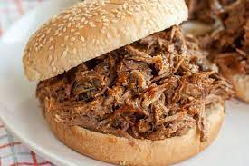

Rootbeer Pulled Pork Sandwiches

We're here to end the inconvenience of consuming
food and beverage as two separate items
This simple recipe will have you on your way to
streamlined bliss in no time at all
Ingredients
- 1 boneless pork shoulder butt roast
- 18 oz barbecue sauce
- 12 oz rootbeer or cola
- 12 kaiser rolls, split
Steps
- Place meat in slow cooker. Add rootbeer; cook, covered, 8 to 10 hours
- Remove roast. Discard Juices. Shred pork with two forks,
return to slow cooker. Stir in barbecue sauce, cook for 30 minutes.
- Serve on rolls.